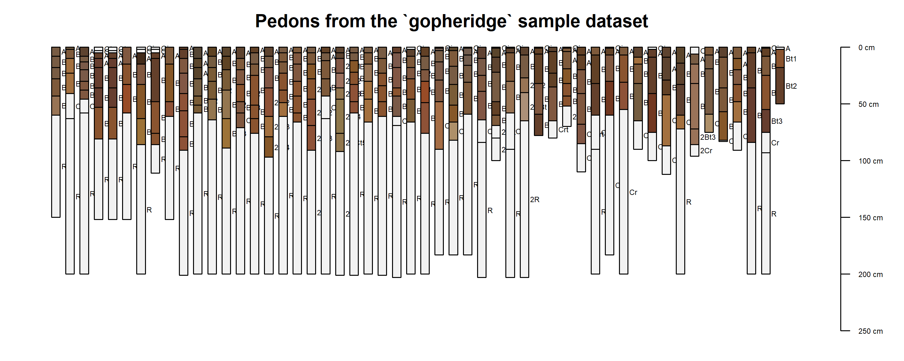
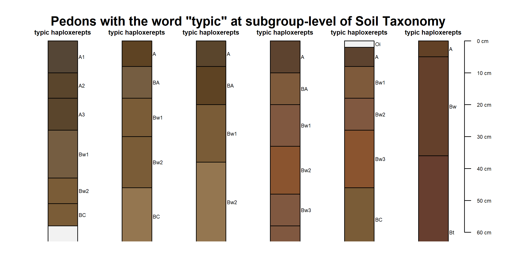
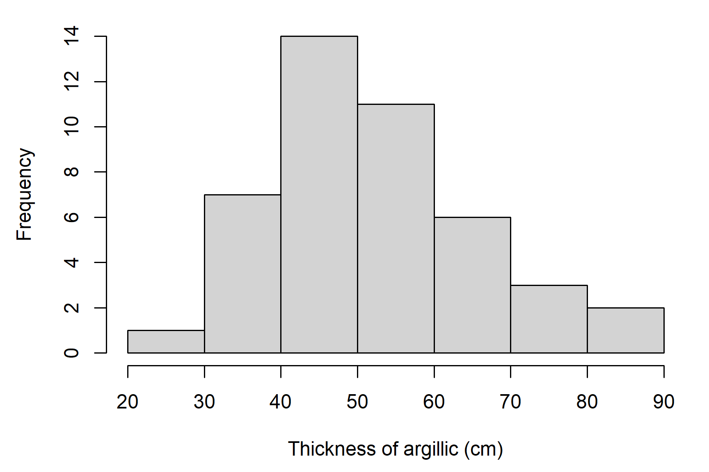
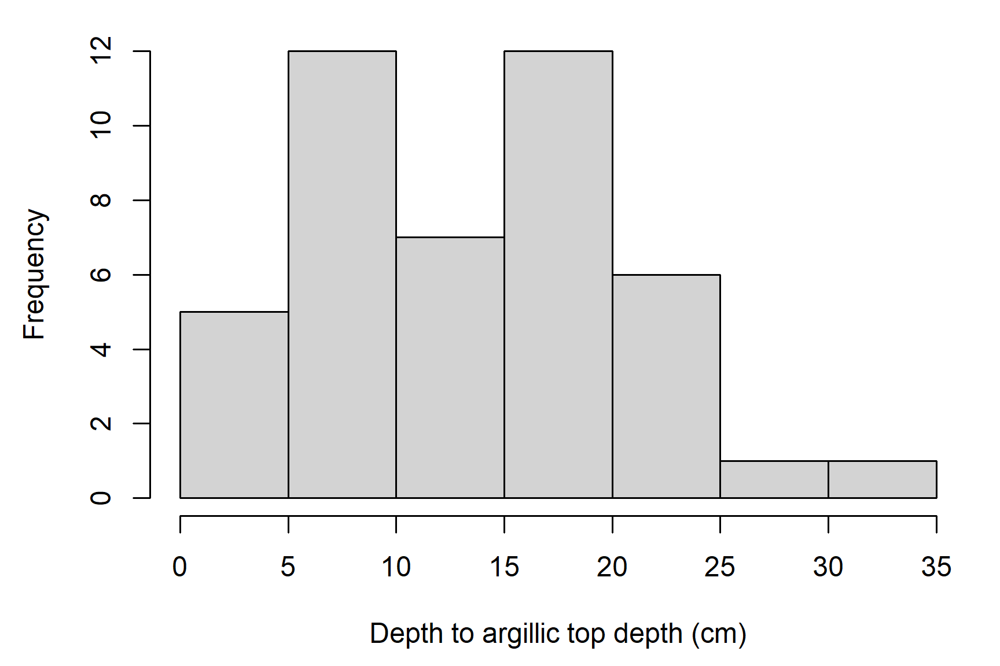
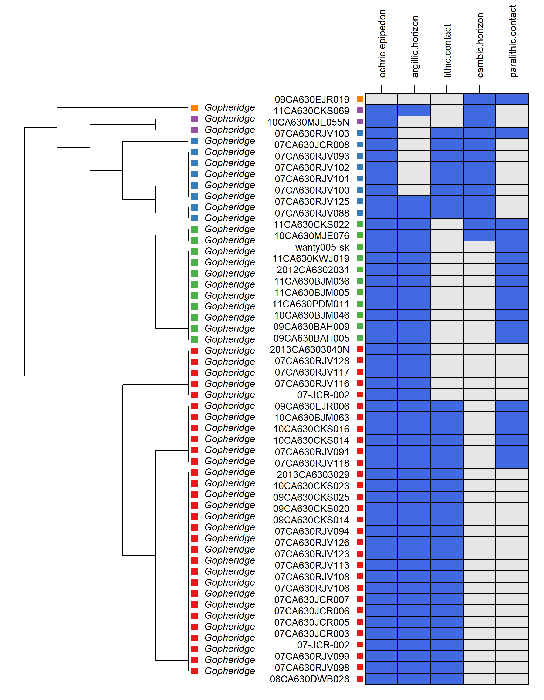

Chapter 2 The Data We Use

2.1 Objectives (Data)
- Learn more about R and how to inspect objects and data types
- Use the soilDB package to load NASIS pedon data into R
- Learn about the checks run on data loaded by the
fetchNASIS()function - Understand the structure of data stored in a
SoilProfileCollection(SPC) - Learn ways to logically filter and subset data in R
- Learn how functions can be used to bundle operations
- Review additional data that is accessible via extended data functions
- Introduce
soilReportsR package
2.2 The Structure of Our Data
What if you could extract, organize, and visualize data from NASIS and many other commonly used soil database sources with a couple of lines of code?

We have created the soilDB package just for this! soilDB returns tabular data, spatial data objects and SoilProfileCollection objects! SoilProfileCollection objects are defined in the aqp (Algorithms for Quantitative Pedology) package as a handy abstraction for commonly used data and “bookkeeping” of said data.
2.2.1 Package References
The manual pages for soilDB and aqp are accessible (click index at the bottom of the Help tab in RStudio) by entering the following into the R console:
2.2.2 soilDB Functions
soilDB functions are the quickest way to get up and running:
-
- Gets and re-packages data from a local NASIS database.
-
- Gets KSSL laboratory pedon/horizon layer data from a local NASIS database.
-
- Gets KSSL data from the SoilWeb system via BBOX, MLRA, or series name query.
-
- Fetches a limited subset of horizon- and site-level attributes for named soil series from the SoilWeb system.
-
- Full-text searching of OSD sections.
-
- Gets Rapid Carbon Assessment (RaCA) data by State, geographic bounding-box, RaCA site ID, or series query from the SoilWeb system.
-
- Queries soil and climate data from USDA-NRCS SCAN Stations.
-
- Downloads data from the Henry Mount Soil Climate Database.
-
- Fetches commonly used site and horizon data from a PedonPC v.5 database.
-
- Fetches component data from Soil Data Access.
-
- Fetches polygon, bounding box and centroid data from SSURGO, STATSGO and the
sapolygon(Soil Survey Area Polygon) from Soil Data Access
- Fetches polygon, bounding box and centroid data from SSURGO, STATSGO and the
-
- Submits queries to the Soil Data Access system.
2.2.3 Importance of Pedon Data
The importance of pedon data for present and future work cannot be overstated. These data represent decades of on-the-ground observations of the soil resource for a given area.
As difficult as it may be to take the time to enter legacy pedon data, it is vitally important that we capture this resource and get these data into NASIS as an archive of point observations.

2.2.4 Some Issues With Pedon Data
Making and documenting observations of soil requires hard work. Digging is difficult, and writing soil descriptions is time consuming!
Our confidence in observations commonly weakens with the depth of the material described.
- If we acknowledge this, which we must, then how do we deal with it in pedon data?
- Use a cutoff depth, for example 100 cm, can be used to truncate observations to a zone of greater confidence.
- Show the relative confidence of the data with depth.
- If we acknowledge this, which we must, then how do we deal with it in pedon data?
2.3 Challenges with Pedon Data
- Consistency
- Missing data
- Confidence in the observations
- Uncertainty with depth
- Description style differences
- Depth described, horizonation usage styles
- Legacy data vintage
- Decadal span of data
- Taxonomy updates, horizon nomenclature
- Location confidence
- Origin of the location information
- Datum used for data collection
- Accuracy for GPS values at the time of data collection
2.3.1 Meeting the Challenges
- Graphical display of the data and summary outputs (slice-wise aggregation)
- Generalized Horizon Labels (GHL). Derive an aggregate soil profile and summarize soil properties for groups of similar soils.
- More on that process can be seen in the following tutorial: GHL Aggregation Presentation and GHL Aggregation Tutorial.
For more information regarding difficult pedon data, see the following tutorial in the “aqp” package:
Dealing with Troublesome data.
2.4 The aqp SoilProfileCollection
The SoilProfileCollection class (SPC) provided by the aqp package is a soil-specific tool.
It is a type of object that simplifies the process of working with collections of data associated with soil profiles, e.g., site-level data, horizon-level data, spatial data, diagnostic horizon data, metadata, etc.
A SoilProfileCollection is like the NASIS Pedon “object” in that it provides generalizations, specific routines and rules about the fundamental tables and their relationships that are relevant to soil observations.
In many ways the SPC is more adaptable than the NASIS Pedon concept, strictly speaking. It can “contain” aggregations of any relevant parts of any soil data schema (table and column structure). Through this mechanism, it can be a mediator between formats and algorithms.
2.4.1 SoilProfileCollection methods
Many “familiar” methods are defined for the SoilProfileCollection object. Some are unique, and others operate like more common functions of vector and data.frame objects, such as nrow() (“how many horizons?”) or length() (“how many sites/pedons?”).
Perhaps most importantly, when you access the site() data or the horizons() data of a SoilProfileCollection, you get a data.frame object that you can use like any other you might use or make in R.
2.4.1.1 Promoting data.frame to SoilProfileCollection
The SoilProfileCollection object is a collection of 1-D profile descriptions, of the type conventionally described on a Form 232, or on tabular data returned from laboratory.
The object is “horizon data forward” in that you start with that, and can create site-level attributes by normalization, joins, calculations and more.
Most of the time if you are using your NASIS data, or an official database, there are defined ways of getting the data out.
In the pre-course, we had you set up a process so you could connect to your local NASIS instance to “fetch” data and have methods like fetchNASIS put things together for you.
This input to make a SoilProfileCollection can be represented most simply as a data.frame with unique site or profile ID and depth combinations for each horizon or layer – for example, a subset of the phorizon or chorizon table in NASIS.
A simple example of this type oftabular horizon data is the sp4 data set: some serpentine soil profiles stored in a data.frame in the aqp package (after McGahan et al., 2009).
library(aqp)
# Load sample serpentine soil data (McGahan et al., 2009)
data(sp4, package = "aqp")
head(sp4)## id name top bottom K Mg Ca CEC_7 ex_Ca_to_Mg sand silt clay CF
## 1 colusa A 0 3 0.3 25.7 9.0 23.0 0.35 46 33 21 0.12
## 2 colusa ABt 3 8 0.2 23.7 5.6 21.4 0.23 42 31 27 0.27
## 3 colusa Bt1 8 30 0.1 23.2 1.9 23.7 0.08 40 28 32 0.27
## 4 colusa Bt2 30 42 0.1 44.3 0.3 43.0 0.01 27 18 55 0.16
## 5 glenn A 0 9 0.2 21.9 4.4 18.8 0.20 54 20 25 0.55
## 6 glenn Bt 9 34 0.3 18.9 4.5 27.5 0.20 49 18 34 0.84## [1] "data.frame"To convert this horizon data into a SoilProfileCollection, we need to identify three parameters: idname, top, and bottom. These parameters refer to the columns of unique profile IDs, top depths and bottom depths, respectively.
These three define the “logical consistency” of 1-D descriptions within the collection. We specify this for your input data.frame using the depths<- function.
Use a formula to specify column names in the data.frame, in this case "id", "top" and "bottom".
## [1] "SoilProfileCollection"
## attr(,"package")
## [1] "aqp"2.4.1.1.1 Syntax Explanation
The formula expresses the idea that a profile 1-dimensional description id has a vertical extent (Z, in profile) defined by set of top and bottom depths described for that profile.
In this simplified 1-dimensional model we are concerned about keeping track of things like thickness, order, overlaps, gaps, or duplication in the data. From this, we can do a lot of “logic” checks – strictly from a perspective of basic physical representation of the horizon data.
2.4.1.2 Extracting Site and Horizon Data
The SoilProfileCollection is an S4 R object. S4 objects have slots. Of primary importance, it has slots for site-level data and horizon-level data.
You can extract values from these slots using the site() and horizons() functions. These create data.frame objects that are separate from the SoilProfileCollection.
## 'data.frame': 10 obs. of 1 variable:
## $ id: chr "colusa" "glenn" "kings" "mariposa" ...## 'data.frame': 30 obs. of 14 variables:
## $ id : chr "colusa" "colusa" "colusa" "colusa" ...
## $ name : chr "A" "ABt" "Bt1" "Bt2" ...
## $ top : int 0 3 8 30 0 9 0 4 13 0 ...
## $ bottom : int 3 8 30 42 9 34 4 13 40 3 ...
## $ K : num 0.3 0.2 0.1 0.1 0.2 0.3 0.2 0.6 0.8 0.6 ...
## $ Mg : num 25.7 23.7 23.2 44.3 21.9 18.9 12.1 12.1 17.7 28.3 ...
## $ Ca : num 9 5.6 1.9 0.3 4.4 4.5 1.4 7 4.4 5.8 ...
## $ CEC_7 : num 23 21.4 23.7 43 18.8 27.5 23.7 18 20 29.3 ...
## $ ex_Ca_to_Mg: num 0.35 0.23 0.08 0.01 0.2 0.2 0.58 0.51 0.25 0.2 ...
## $ sand : int 46 42 40 27 54 49 43 36 27 42 ...
## $ silt : int 33 31 28 18 20 18 55 49 45 26 ...
## $ clay : int 21 27 32 55 25 34 3 15 27 32 ...
## $ CF : num 0.12 0.27 0.27 0.16 0.55 0.84 0.5 0.75 0.67 0.25 ...
## $ hzID : chr "1" "2" "3" "4" ...2.4.1.3 Methods like data.frame
The base R functions for accessing and setting data.frame columns by name such as $ and [[ work for SoilProfileCollection objects, too.
2.4.1.3.1 $ and [[
## [1] 21 27 32 55 25 34 3 15 27 32 25 31 33 13 21 23 15 17 12 19 14 14 22 25 40 51 67 24 25 32## [1] 21 27 32 55 25 34 3 15 27 32 25 31 33 13 21 23 15 17 12 19 14 14 22 25 40 51 67 24 25 32## [1] 21 27 32 55 25 34 3 15 27 32 25 31 33 13 21 23 15 17 12 19 14 14 22 25 40 51 67 24 25 32## [1] 21 27 32 55 25 34 3 15 27 32 25 31 33 13 21 23 15 17 12 19 14 14 22 25 40 51 67 24 25 32# use $<- / [[<- to set proportional clay content
sp4$clay <- sp4[['clay']] / 100
# undo what we did above; back to percentage
sp4[['clay']] <- sp4$clay * 100
# create new site variable (recycled for all sites)
site(sp4)$newvar1 <- "numberone"
# create new horizon variable (recycled for all horizons)
horizons(sp4)$newvar2 <- "numbertwo"2.4.1.3.2 [
The SoilProfileCollection also has [ – but a different interpretation from the [i, j] indexing in data.frame.
In a
data.frameyou haveobject[row, column, drop=TRUE]; the result is adata.frame(or a vector with defaultdrop).In a
SoilProfileCollectionyou haveobject[site, horizon]; the result is aSoilProfileCollection.
## SoilProfileCollection with 2 profiles and 6 horizons
## profile ID: id | horizon ID: hzID
## Depth range: 34 - 42 cm
##
## ----- Horizons (6 / 6 rows | 10 / 15 columns) -----
## id hzID top bottom name K Mg Ca CEC_7 ex_Ca_to_Mg
## colusa 1 0 3 A 0.3 25.7 9.0 23.0 0.35
## colusa 2 3 8 ABt 0.2 23.7 5.6 21.4 0.23
## colusa 3 8 30 Bt1 0.1 23.2 1.9 23.7 0.08
## colusa 4 30 42 Bt2 0.1 44.3 0.3 43.0 0.01
## glenn 5 0 9 A 0.2 21.9 4.4 18.8 0.20
## glenn 6 9 34 Bt 0.3 18.9 4.5 27.5 0.20
##
## ----- Sites (2 / 2 rows | 2 / 2 columns) -----
## id newvar1
## colusa numberone
## glenn numberone
##
## Spatial Data: [EMPTY]## SoilProfileCollection with 10 profiles and 20 horizons
## profile ID: id | horizon ID: hzID
## Depth range: 5 - 40 cm
##
## ----- Horizons (6 / 20 rows | 10 / 15 columns) -----
## id hzID top bottom name K Mg Ca CEC_7 ex_Ca_to_Mg
## colusa 1 0 3 A 0.3 25.7 9.0 23.0 0.35
## colusa 2 3 8 ABt 0.2 23.7 5.6 21.4 0.23
## glenn 5 0 9 A 0.2 21.9 4.4 18.8 0.20
## glenn 6 9 34 Bt 0.3 18.9 4.5 27.5 0.20
## kings 7 0 4 A 0.2 12.1 1.4 23.7 0.58
## kings 8 4 13 Bt1 0.6 12.1 7.0 18.0 0.51
## [... more horizons ...]
##
## ----- Sites (6 / 10 rows | 2 / 2 columns) -----
## id newvar1
## colusa numberone
## glenn numberone
## kings numberone
## mariposa numberone
## mendocino numberone
## napa numberone
## [... more sites ...]
##
## Spatial Data: [EMPTY]Everything has gets subset simultaneously – sites, horizons, spatial data, diagnostics, etc. in one command.
## id name top bottom K Mg Ca CEC_7 ex_Ca_to_Mg sand silt clay CF hzID newvar2
## 1 colusa A 0 3 0.3 25.7 9.0 23.0 0.35 46 33 21 0.12 1 numbertwo
## 2 colusa ABt 3 8 0.2 23.7 5.6 21.4 0.23 42 31 27 0.27 2 numbertwo2.5 Using the soilDB Package
The soilDB package for R works with a variety of soil and plant resource related data sources.
It provides functions for accessing data stored in in NASIS, KSSL, SDA, SoilWeb, SoilGrids and other sources. These are wrappers around an internal database interface to NASIS; the one that you set up during the pre-course.
Basic data checks are run within fetch functions. get functions are a usually a step lower in terms of abstraction – and generally return single data.frame or list of data.frame.
You can set up scripts to make custom queries against these or other sources on your own – there is an example at the end of this section.
For now, we will start with the fetch functions and others that will get you a large variety of data you can use for soil and ecological site analyses.
2.5.1 fetchNASIS()
The [fetchNASIS()](http://ncss-tech.github.io/soilDB/docs/reference/fetchNASIS.html) convenience function extracts data from a NASIS selected set via Structured Query Language (SQL).
Note that the import process in fetchNASIS(), and the other methods, is not comprehensive. It does not pull every column for every table related to pedon data out of NASIS.
Instead, it pulls essential / commonly used pedon and horizon data. Higher level functions like fetchNASIS() bundle a series of lower-level queries to get specific parts of the Pedon or Component data structures. Much of the nested complexity of NASIS is simplified in the resulting object. You may need to make more detailed queries and joins to resolve specific questions.
Many-to-one relationships are “flattened” where possible by fetchNASIS(). This aggregates the data from various tables into one “site” record with related horizon records, per profile.
You can see the child tables that are aggregated using the get_extended_data_from_NASIS() method, which returns a named list of child table sources that are joined to the SoilProfileCollection made with fetchNASIS() using the internal record IDs in the respective tables.
2.5.1.1 fetchNASIS arguments
fetchNASIS() has many arguments:
- from = ‘pedons’ or ‘components’ or ‘pedon_report’
- This option allows you to select which data you want to load from NASIS. Choosing either ‘pedons’ or ‘components’ will load data from your local database. If ‘pedon_report’ is specified then it will load data from the text file generated by the NASIS report ‘fetchNASIS’.
- url = ‘https://nasis.sc.egov.usda.gov/OfflineReports/fetchNASIS_04e6ec7d-fab5-4a90-bb88-9b9dc56dfdd8.txt’
- If from = ‘pedon_report’ this option will load data from the URL that is generated when the NASIS report ‘fetchNASIS’ is run offline against the national database. This is useful for loading more than 20,000 pedons at one time, such for an entire Soil Survey Region.
- SS =
TRUE/FALSE- The Selected Set (SS) option allows you to choose whether you want the data to load from your current selected set in NASIS or from the local database tables. The default is set to
TRUEso if unspecifiedfetchNASIS()will always load from the data in the selected set.
- The Selected Set (SS) option allows you to choose whether you want the data to load from your current selected set in NASIS or from the local database tables. The default is set to
- stringAsFactors =
TRUE/FALSE- This option allows you to select whether to convert strings into factors or not. The default is set to FALSE, which will handle strings as character formats. Manually set this option to
TRUEif you wish to handle character strings as factors.
- This option allows you to select whether to convert strings into factors or not. The default is set to FALSE, which will handle strings as character formats. Manually set this option to
- rmHzErrors =
TRUE/FALSE- Setting this value to
TRUE(the default) enables checks for horizon depth consistency. Consider setting this argument toFALSEif you aren’t concerned about horizon-depth errors or if you know that your selected set contains many combination horizons (e.g., consisting of E/Bt horizons or similar two-part horizons described individually for the same depth range). Note that any pedons flagged as having horizon-depth errors (rmHzErrors =TRUE) are omitted from the data returned byfetchNASIS().
- Setting this value to
- nullFragsAreZero =
TRUE/FALSE- Setting this value to
TRUE(the default) converts null entries for rock fragment volumes to 0. This is typically the right assumption because rock fragment data are typically populated only when observed. If you know that your data contain a combination of omitted information (e.g. no rock fragment volumes are populated) then consider setting this argument toFALSE.
- Setting this value to
- soilColorState = ‘moist’ or ‘dry’
- Select dry or moist colors to be converted and placed into a horizon-level attribute called
soil_color. Moist and dry colors are also stored inmoist_soil_coloranddry_soil_color.
- Select dry or moist colors to be converted and placed into a horizon-level attribute called
- lab =
TRUE/FALSE- This option allows for loading the data associated with horizons that may be in the
phlabresultstable. The default is set toFALSE, which will not load records from thephlabresultstable.
- This option allows for loading the data associated with horizons that may be in the
For more information on the data checks and adjusting the default options to fetchNASIS() function, see the following resource: Tips on Getting Data from NASIS into R.
2.5.2 Open Database Connectivity (ODBC) Connection to NASIS
After setting up an ODBC connection, you can use R to access data from a selected set defined in your local NASIS database.
How to Create an ODBC Connection to local NASIS database for R.
Does NASIS need to be open and running to query data using soilDB?
No, fetchNASIS() works whether the NASIS application is running or not. You just need to make sure that the data you want has been loaded into your selected set.
2.5.3 The gopheridge soilDB Dataset
The gopheridge sample data set is a sample R object returned from fetchNASIS() in a self-contained .rda file stored in soilDB.
Open RStudio, and set up the environment by loading packages and the gopheridge sample dataset.
library(aqp)
library(soilDB)
# load example dataset
data(gopheridge, package = "soilDB")
# what kind of object is this?
class(gopheridge)## [1] "SoilProfileCollection"
## attr(,"package")
## [1] "aqp"## Formal class 'SoilProfileCollection' [package "aqp"] with 9 slots
## ..@ idcol : chr "peiid"
## ..@ hzidcol : chr "phiid"
## ..@ depthcols : chr [1:2] "hzdept" "hzdepb"
## ..@ metadata :List of 9
## ..@ horizons :'data.frame': 317 obs. of 69 variables:
## ..@ site :'data.frame': 52 obs. of 88 variables:
## ..@ sp :Formal class 'SpatialPoints' [package "sp"] with 3 slots
## ..@ diagnostic :'data.frame': 162 obs. of 4 variables:
## ..@ restrictions:'data.frame': 56 obs. of 8 variables:## [1] "peiid" "pedon_id" "siteiid" "site_id"
## [5] "obs_date" "utmzone" "utmeasting" "utmnorthing"
## [9] "x" "y" "horizdatnm" "x_std"
## [13] "y_std" "gpspositionalerror" "describer" "pedonpurpose"
## [17] "pedontype" "pedlabsampnum" "labdatadescflag" "tsectstopnum"
## [21] "tsectinterval" "utransectid" "tsectkind" "tsectselmeth"
## [25] "elev_field" "slope_field" "aspect_field" "plantassocnm"
## [29] "earthcovkind1" "earthcovkind2" "erocl" "bedrckdepth"
## [33] "bedrckkind" "bedrckhardness" "hillslopeprof" "geomslopeseg"
## [37] "shapeacross" "shapedown" "slopecomplex" "drainagecl"
## [41] "geomposhill" "geomposmntn" "geomposflats" "slope_shape"
## [45] "classdate" "classifier" "classtype" "taxonname"
## [49] "localphase" "taxonkind" "seriesstatus" "taxpartsize"
## [53] "taxorder" "taxsuborder" "taxgrtgroup" "taxsubgrp"
## [57] "soiltaxedition" "osdtypelocflag" "taxmoistcl" "taxtempregime"
## [61] "taxfamother" "psctopdepth" "pscbotdepth" "selection_method"
## [65] "ecositeid" "ecositenm" "ecositecorrdate" "es_classifier"
## [69] "es_selection_method" "ochric.epipedon" "argillic.horizon" "lithic.contact"
## [73] "cambic.horizon" "paralithic.contact" "mollic.epipedon" "paralithic.materials"
## [77] "surface_fgravel" "surface_gravel" "surface_cobbles" "surface_stones"
## [81] "surface_boulders" "surface_channers" "surface_flagstones" "surface_paragravel"
## [85] "surface_paracobbles" "landform_string" "pmkind" "pmorigin"## [1] "peiid" "phiid" "hzname" "genhz"
## [5] "hzdept" "hzdepb" "clay" "silt"
## [9] "sand" "fragvoltot" "texture" "texcl"
## [13] "lieutex" "phfield" "effclass" "labsampnum"
## [17] "rupresblkdry" "stickiness" "plasticity" "ksatpedon"
## [21] "texture_class" "d_r" "d_g" "d_b"
## [25] "d_hue" "d_value" "d_chroma" "d_sigma"
## [29] "m_r" "m_g" "m_b" "m_hue"
## [33] "m_value" "m_chroma" "m_sigma" "moist_soil_color"
## [37] "dry_soil_color" "fine_gravel" "gravel" "cobbles"
## [41] "stones" "boulders" "channers" "flagstones"
## [45] "parafine_gravel" "paragravel" "paracobbles" "parastones"
## [49] "paraboulders" "parachanners" "paraflagstones" "unspecified"
## [53] "total_frags_pct_nopf" "total_frags_pct" "art_fgr" "art_gr"
## [57] "art_cb" "art_st" "art_by" "art_ch"
## [61] "art_fl" "art_unspecified" "total_art_pct" "huartvol_cohesive"
## [65] "huartvol_penetrable" "huartvol_innocuous" "huartvol_persistent" "soil_color"
## [69] "hzID"2.5.3.1 Make profile sketches
The plot() function applied to a SoilProfileCollection object generates sketches based on horizon depths, designations, and colors.
The fetchNASIS() function automatically converts moist Munsell colors into R-style colors.
Multiple colors per horizon are mixed to make the ones that are shown by default in the calculated soil_color fields. See ?plotSPC for a detailed list of arguments and examples.
par(mar = c(1, 1, 1, 1))
# omitting pedon IDs and horizon designations
plot(gopheridge,
print.id = FALSE,
name = '',
width = 0.3)
title('Pedons from the `gopheridge` sample dataset', line = -0.5)
2.5.4 Prepare Example Data
Take a moment to open the NASIS client, create a selected set with some site/pedon objects that will be used in the following sections.
Using a query that includes both Site and Pedon tables, download to your local database. Get sites with MT647 in the user site ID.
NOTE: Depending on the query, you may need to include wild card characters such as: %MT647%.
2.5.4.1 Data Checks Run by fetchNASIS()
When you load pedons using the fetchNASIS() function, the following data checks are performed:
Presence of multiple map datums. Results reported to the user and the data are not modified.
Inconsistent horizon boundaries. Pedons with inconsistent horizon boundaries are not loaded. In most cases, this occurs when the bottom depth of a horizon is not the same as the upper depth of the next lower horizon.
## hzname top bot
## 1 A 0 30
## 2 Bt1 38 56
## 3 Bt2 56 121
## 4 Bk 121 135
## 5 R 135 NANote the issue above. The bottom depth of the A horizon and the upper depth of the Bt1 horizon should be the same: either 30 or 38 cm. The correct depth needs to be determined and fixed in the database
Missing lower horizon depths. Offending horizons are fixed by replacing the missing bottom depth with the top depth plus 2 cm. In the case of the profile shown above, a bottom depth of 137 cm would be inserted where the depth is missing.
Sites missing pedon records. Data without corresponding horizons are not loaded.
2.5.4.2 Example: Find sites where errors occur to fix in NASIS
If errors in the pedon data are detected when loading data using fetchNASIS(), the following “get” commands can trace them back to the corresponding records in NASIS. These access an option that is stored in the package enviroment that contains a vector of IDs.
- get(‘sites.missing.pedons’, envir = soilDB.env)
- Returns user site ID for sites missing pedons.
- get(‘dup.pedon.ids’, envir = soilDB.env)
- Returns user pedon ID for sites with duplicate pedon ID
- get(‘bad.pedon.ids’, envir = soilDB.env)
- Returns user pedon ID for pedons with inconsistent horizon depths.
- get(‘bad.horizons’, envir = soilDB.env)
- Returns a data.frame of horizon-level information for pedons with inconsistent horizon depths.
For more information on the design of soilDB functions, see the following documentation: Introduction to soilDB.
Additional documentation and examples can be found in:
2.5.4.3 Follow along with your own data
Explore the site- and horizon-level data in your own SPC using the following code.
NOTE: You must have pedons in your local NASIS selected set.
# load required libraries
library(aqp)
library(soilDB)
# load data from a NASIS selected set
pedons <- fetchNASIS(from = 'pedons')
# what kind of object is this?
class(pedons)
# how many pedons?
length(pedons)
# look at variables in site and horizon tables within the SPC
siteNames(pedons)
horizonNames(pedons)
# look at the first 2 rows of site and horizon data
head(site(pedons), 2)
head(horizons(pedons), 2)How can you find out how many site and horizon records are in the data you just loaded?
2.6 Viewing Pedon Locations
2.6.1 Plotting Geographic Data
Plotting the data as an R graphic can give you some idea of how data look spatially and whether their distribution is what you expect.
Typos are relatively common when coordinates are manually entered. Viewing the data spatially is a quick way to see if any points plot far outside of the geographic area of interest and therefore clearly have an error.
# plot the locations of the gopheridge pedons with R
#
# Steps:
# 1) create and inspect an sf data.frame object
# 2) plot the data with mapview
# load libraries
library(aqp)
library(soilDB)
library(sf)
library(mapview)
# this creates sample gopheridge object in your environment
data("gopheridge", package = "soilDB")
# replace gopheridge object with fetchNASIS() (your data)
#gopheridge <- NULL
#gopheridge <- fetchNASIS()
# create simple features POINT geometry data.frame
# st_as_sf(): convert data.frame to spatial simple features, with points in $geometry
# st_crs(): set EPSG:4326 Coordinate Reference System (CRS) as Well-Known Text (WKT)
gopher.locations <- st_as_sf(site(gopheridge),
coords = c('x_std','y_std'),
crs = st_crs(4326))
# inspect first 6 points
head(gopher.locations)## Simple feature collection with 6 features and 86 fields
## geometry type: POINT
## dimension: XY
## bbox: xmin: -120.715 ymin: 37.68838 xmax: -120.341 ymax: 38.1465
## geographic CRS: WGS 84
## peiid pedon_id siteiid site_id obs_date utmzone utmeasting utmnorthing x
## 1 1137354 08DWB028 1155200 08CA630DWB028 2008-09-29 10 708601.0 4224746 -120.6195
## 2 1147151 07RJV098 1169946 07CA630RJV098 2007-08-31 10 734211.0 4179663 -120.3422
## 3 1147190 07RJV099 1201787 07CA630RJV099 2007-09-27 10 734462.9 4174574 -120.3410
## 4 242808 S2007CA009002 254491 07-JCR-002 2007-04-02 10 700783.0 4201935 -120.7150
## 5 252851 S2007CA009002 254491 07-JCR-002 2007-04-02 10 700783.0 4201935 -120.7150
## 6 268791 07JCR003 269602 07CA630JCR003 2007-05-14 10 714552.7 4191747 -120.5614
## y horizdatnm gpspositionalerror describer pedonpurpose
## 1 38.14650 NAD83 NA Dean Burkett soil survey inventory
## 2 37.73446 WGS84 NA Bob Vobora soil survey inventory
## 3 37.68839 WGS84 NA Bob Vobora <NA>
## 4 37.94286 NAD83 NA John Rule laboratory sampling site
## 5 37.94286 NAD83 NA John Rule full pedon description
## 6 37.84805 NAD83 NA John Rule full pedon description
## pedontype pedlabsampnum labdatadescflag tsectstopnum tsectinterval
## 1 representative pedon for component <NA> 0 NA NA
## 2 correlates to named soil <NA> 0 NA NA
## 3 <NA> <NA> 0 NA NA
## 4 OSD pedon 07N0469 1 NA NA
## 5 OSD pedon 07N0469 0 NA NA
## 6 correlates to named soil <NA> 0 NA NA
## utransectid tsectkind tsectselmeth elev_field slope_field aspect_field plantassocnm
## 1 NA <NA> <NA> 380 20 255 <NA>
## 2 NA <NA> <NA> 344 8 280 <NA>
## 3 NA <NA> <NA> 326 31 215 <NA>
## 4 NA <NA> <NA> 337 20 272 <NA>
## 5 NA <NA> <NA> 337 20 272 <NA>
## 6 NA <NA> <NA> 324 15 154 Blue Oak Woodland
## earthcovkind1 earthcovkind2 erocl bedrckdepth bedrckkind bedrckhardness hillslopeprof
## 1 <NA> <NA> <NA> 46 greenstone strongly shoulder
## 2 tree cover hardwoods <NA> 63 chert indurated summit
## 3 <NA> <NA> <NA> 58 metavolcanics indurated backslope
## 4 <NA> <NA> <NA> 81 greenstone strongly backslope
## 5 <NA> <NA> <NA> 81 greenstone strongly backslope
## 6 <NA> <NA> <NA> 60 metavolcanics strongly backslope
## geomslopeseg shapeacross shapedown slopecomplex drainagecl geomposhill geomposmntn geomposflats
## 1 upper third convex convex <NA> well nose slope <NA> <NA>
## 2 <NA> convex convex simple well nose slope <NA> <NA>
## 3 <NA> convex convex complex well side slope <NA> <NA>
## 4 middle third linear linear complex well side slope <NA> <NA>
## 5 middle third linear linear complex well side slope <NA> <NA>
## 6 <NA> convex convex <NA> well side slope <NA> <NA>
## slope_shape classdate classifier classtype taxonname localphase taxonkind seriesstatus
## 1 convex / convex 2008-09-29 DWB field Gopheridge <NA> series established
## 2 convex / convex 2017-03-15 Julie Baker correlated Gopheridge <NA> series tentative
## 3 convex / convex 2018-05-31 Julie Baker correlated Gopheridge <NA> series <NA>
## 4 linear / linear 2012-01-24 <NA> correlated Gopheridge <NA> series tentative
## 5 linear / linear 2007-04-02 <NA> sampled as Gopheridge <NA> <NA> <NA>
## 6 convex / convex 2012-01-24 <NA> correlated Gopheridge <NA> series <NA>
## taxpartsize taxorder taxsuborder taxgrtgroup taxsubgrp soiltaxedition
## 1 loamy-skeletal alfisols xeralfs haploxeralfs ultic haploxeralfs twelfth edition
## 2 loamy-skeletal alfisols xeralfs haploxeralfs ultic haploxeralfs twelfth edition
## 3 loamy-skeletal alfisols xeralfs haploxeralfs ultic haploxeralfs twelfth edition
## 4 loamy-skeletal alfisols xeralfs haploxeralfs ultic haploxeralfs tenth edition
## 5 loamy-skeletal alfisols xeralfs haploxeralfs mollic haploxeralfs tenth edition
## 6 loamy-skeletal alfisols xeralfs haploxeralfs ultic haploxeralfs tenth edition
## osdtypelocflag taxmoistcl taxtempregime taxfamother psctopdepth pscbotdepth selection_method
## 1 0 xeric thermic <NA> 18 60 single record
## 2 0 xeric thermic <NA> 10 41 most recent
## 3 0 xeric thermic not used 20 46 most recent
## 4 1 xeric thermic <NA> 18 68 most recent
## 5 0 xeric thermic <NA> 18 68 single record
## 6 0 xeric thermic <NA> 15 58 most recent
## ecositeid ecositenm ecositecorrdate es_classifier
## 1 <NA> <NA> <NA> <NA>
## 2 F018XI201CA Moderately Deep Thermic Foothills 22-31" PZ <NA> <NA>
## 3 <NA> <NA> <NA> <NA>
## 4 <NA> <NA> <NA> <NA>
## 5 <NA> <NA> <NA> <NA>
## 6 <NA> <NA> <NA> <NA>
## es_selection_method ochric.epipedon argillic.horizon lithic.contact cambic.horizon
## 1 <NA> TRUE TRUE TRUE FALSE
## 2 least missing data TRUE TRUE TRUE FALSE
## 3 <NA> TRUE TRUE TRUE FALSE
## 4 <NA> TRUE TRUE TRUE FALSE
## 5 <NA> TRUE TRUE FALSE FALSE
## 6 <NA> TRUE TRUE TRUE FALSE
## paralithic.contact mollic.epipedon paralithic.materials surface_fgravel surface_gravel
## 1 FALSE FALSE FALSE 0 0
## 2 FALSE FALSE FALSE 0 0
## 3 FALSE FALSE FALSE 0 0
## 4 FALSE FALSE FALSE 5 11
## 5 FALSE FALSE FALSE 5 11
## 6 FALSE FALSE FALSE 0 0
## surface_cobbles surface_stones surface_boulders surface_channers surface_flagstones
## 1 0 0 0 0 0
## 2 0 0 0 0 0
## 3 0 0 0 0 0
## 4 1 0 0 0 0
## 5 1 0 0 0 0
## 6 0 0 0 0 0
## surface_paragravel surface_paracobbles landform_string pmkind pmorigin
## 1 0 0 hillslope & hill colluvium & residuum greenstone
## 2 0 0 hillslope residuum chert
## 3 0 0 hillslope colluvium & residuum metavolcanics
## 4 0 0 hillslope colluvium & residuum greenstone
## 5 0 0 hillslope colluvium & residuum greenstone
## 6 0 0 hillslope colluvium & residuum metavolcanics
## geometry
## 1 POINT (-120.6195 38.1465)
## 2 POINT (-120.3422 37.73432)
## 3 POINT (-120.341 37.68838)
## 4 POINT (-120.715 37.94286)
## 5 POINT (-120.715 37.94286)
## 6 POINT (-120.5614 37.84805)## Coordinate Reference System:
## User input: EPSG:4326
## wkt:
## GEOGCRS["WGS 84",
## DATUM["World Geodetic System 1984",
## ELLIPSOID["WGS 84",6378137,298.257223563,
## LENGTHUNIT["metre",1]]],
## PRIMEM["Greenwich",0,
## ANGLEUNIT["degree",0.0174532925199433]],
## CS[ellipsoidal,2],
## AXIS["geodetic latitude (Lat)",north,
## ORDER[1],
## ANGLEUNIT["degree",0.0174532925199433]],
## AXIS["geodetic longitude (Lon)",east,
## ORDER[2],
## ANGLEUNIT["degree",0.0174532925199433]],
## USAGE[
## SCOPE["unknown"],
## AREA["World"],
## BBOX[-90,-180,90,180]],
## ID["EPSG",4326]]2.6.2 Displaying Pedon Data in Google Earth
Google Earth is a powerful viewer for point data. Geographic data is displayed in Google Earth using the Keyhole Markup Language (KML) format.
Using the plotKML package, you can easily create a KML file to inspect and view in Google Earth.
See the related material in this tutorial: Export Pedons to Google Earth.
2.6.3 Exporting Pedon Data to an ESRI Shapefile
Another way you can view the data is to export a shapefile from R. For further information, see this tutorial: Export Pedons to Shapefile.
2.6.4 Follow along with your own data
Use the script below to make an R plot of pedon data loaded from your NASIS selected set.
The following script plots the standard WGS84 longitude/latitude decimal degrees fields from Site table of NASIS. In some cases, these fields might be incomplete due to insufficient data or to not having been calculated from UTM coordinates in NASIS.
Run the following script on the data loaded from your local NASIS selected set. Note that you need to filter out any pedons that are missing their standard WGS84 longitude/latitude coordinates.
library(aqp)
library(soilDB)
library(sf)
library(mapview)
# get pedons from the selected set
pedons <- fetchNASIS(from = 'pedons')
# missing values in coordinates not allowed
pedons.sp <- subset(pedons, !is.na(x_std) & !is.na(y_std))
# create sf object
pedon.locations <- st_as_sf(site(pedons.sp),
coords = c('x_std','y_std'),
crs = st_crs(4326))
# interactive map
mapview(pedon.locations,
legend = FALSE,
map.types = 'OpenStreetMap',
label = pedon.locations$site_id)2.7 Working with Data in R
2.7.1 Summaries
Now that you’ve loaded some data, you can look at additional ways to summarize and interact with data elements.
2.7.1.1 table()
The base R table() function is very useful for quick summary operations. It returns a named vector with the amount of each unique level of the a given vector.
The numeric vector of “counts” is commonly combined with other functions such as sort(), order(), prop.table(), is.na() or !is.na() (is not NA) to identify abundance, proportions, or missing data (NA).
# load required packages
library(aqp)
library(soilDB)
data("gopheridge", package = "soilDB")
# for these examples, we use the gopheridge dataset as our "selected set"
pedons <- gopheridge # fetchNASIS() # you can use fetchNASIS
# summarize which soil taxa we have loaded
table(pedons$taxonname)##
## Gopheridge
## 52## Gopheridge
## 52# could do the same thing for taxonomic subgroups or any column of the SPC at the site or horizon levels
table(pedons$taxsubgrp)##
## mollic haploxeralfs typic haploxerepts ultic haploxeralfs ultic haploxerolls
## 1 6 44 1##
## ultic haploxeralfs typic haploxerepts mollic haploxeralfs ultic haploxerolls
## 44 6 1 12.7.1.2 dput()
Another very useful function is dput(), which prints a string-representation of the output of an R expression as code that generates that output so that you can re-use it.
It is also good short-hand for concatenating a comma-delimited list.
Here, we select the first four pedon_id values in pedons site table, and print out a comma-separated c() expression showing those values as a static R expression.
## c("08DWB028", "07RJV098", "07RJV099", "S2007CA009002")This result string can be copy-pasted as a comma-delimited string, used as string for NASIS list queries or other things.
The dput() function is helpful when sending questions or example data to colleagues. Here, we see that the results of dput() are equivalent to the input after evaluation by R.
## [1] TRUE2.7.1.3 The dplyr package and “tidy” data principles
This is a stub to talk about dplyr some links to tidyverse-centric examples of working with data.frame/tibble and summarizing them.
Talk about cool things like rowwise(), across() and translation to high-performance code (dtplyr) and SQL (dbplyr).
2.7.2 Missing Values
##
## mollic haploxeralfs typic haploxerepts ultic haploxeralfs ultic haploxerolls
## 1 6 44 1##
## FALSE
## 52##
## TRUE
## 52# it can also be applied to horizon level columns in the SPC
sort(table(pedons$texture), decreasing=TRUE)##
## BR L GR-L GRV-L CBV-L SPM GRX-L SIL GRV-CL CBV-CL
## 58 37 33 24 18 14 12 11 9 8
## GR-SIL CBX-L GRX-CL CBX-CL GRV-SIL CL GRV-SCL GRX-C MPM SL
## 7 6 5 4 4 3 3 3 3 3
## CB-L GR-CL GRX-SCL PGR-C PGRX-L SICL STV-CL STV-L STX-C STX-L
## 2 2 2 2 2 2 2 2 2 2
## C CB-C CB-CL CB-SCL CB-SIL CBV-SIL CBX-SCL CN-L CN-SICL CNX-L
## 1 1 1 1 1 1 1 1 1 1
## CNX-SICL FLV-L GR-C GR-SIC GRV-SICL GRX-SIC GRX-SIL PCB-SICL PCBV-SICL PCN-C
## 1 1 1 1 1 1 1 1 1 1
## PCNX-CL PGRV-C PGRV-CL PGRX-SCL PGRX-SIL ST-L STV-C STX-CL STX-SICL
## 1 1 1 1 1 1 1 1 12.7.3 Logical Operators
- Less than
<, greater than>, less than or equal to<=, and greater than or equal to>=. %in%Equivalent toIN ()in SQL; same logic asmatch()- Example:
pedons$taxpartsize %in% c('loamy-skeletal', 'sandy-skeletal') - Returns a vector of
TRUE/FALSEequal in length to left-hand side.
- Example:
!=Not-equal-to character “string.”==Note in the example above that R uses a double equal sign as “equal to.”
2.7.4 Pattern Matching
The following examples use the grep() function to pattern match within the data, create an index of the SoilProfileCollection for records that match the specified pattern within that column, and then use that index to filter to specific sites and their corresponding profiles.
Patterns are specified using regular expression (REGEX) syntax.
This process can be applied to many different columns in the SPC based on how you need to filter the data. This example pattern matches on the tax_subgroup column, but another useful application might be to pattern match on geomorphology or parent material.
Say we want to see what the variation of particle size classes are within a specific subgroup? We can use grep() to create a row index, then apply that index to the SoilProfileCollection.
# create a numeric index for pedons with taxsubgroup containing 'typic'
idx <- grep('typic', pedons$taxsubgrp)
idx## [1] 11 12 13 14 26 50# use square bracket notation to subset 'typic' soils in `subset1` object
subset1 <- pedons[idx,]
subset1## SoilProfileCollection with 6 profiles and 37 horizons
## profile ID: peiid | horizon ID: phiid
## Depth range: 200 - 200 cm
##
## ----- Horizons (6 / 37 rows | 10 / 69 columns) -----
## peiid phiid hzdept hzdepb hzname genhz clay silt sand fragvoltot
## 351685 1567471 0 10 A1 A 20 35 45 20
## 351685 1567472 10 18 A2 A 20 35 45 40
## 351685 1567473 18 28 A3 A 20 35 45 10
## 351685 1567474 28 43 Bw1 Bt1 20 35 45 80
## 351685 1567475 43 51 Bw2 Bt2 20 35 45 20
## 351685 1567476 51 58 BC Bt2 20 35 45 82
## [... more horizons ...]
##
## ----- Sites (6 / 6 rows | 10 / 88 columns) -----
## peiid pedon_id siteiid site_id obs_date utmzone utmeasting utmnorthing x y
## 351685 07RJV100 352173 07CA630RJV100 2007-09-17 10 731914.0 4180918 -120.3678 37.74611
## 351686 07RJV101 352174 07CA630RJV101 2007-09-17 10 732398.3 4180564 -120.3625 37.74278
## 351687 07RJV102 352175 07CA630RJV102 2007-09-17 10 732298.0 4181093 -120.3633 37.74778
## 351688 07RJV103 352176 07CA630RJV103 2007-09-24 10 731470.3 4177508 -120.3739 37.71556
## 352495 07RJV093 352964 07CA630RJV093 2007-08-28 10 733216.8 4181168 -120.3531 37.74805
## 640650 07JCR008 646344 07CA630JCR008 2007-06-14 10 700696.7 4201941 -120.7161 37.94278
##
## Spatial Data: [EMPTY]# or use the index directly to summarize taxpartsize for 'typic' soils
sort(table(pedons$taxpartsize[idx]), decreasing = TRUE)##
## loamy-skeletal clayey-skeletal
## 5 1Note: grep() below has an invert argument (default FALSE). This option is very useful for excluding the results of the pattern matching process by inverting whatever the result is. grepl() is the logical version of grep(), so you can invert it using the logical NOT operator: !.
Another method is to create an index using which() function. which() takes any logical vector (or expression), and it returns the indices (positions) where that expression returns TRUE.
Do a graphical check to see the “typic” profiles are selected.
Plot them in R using the SoilProfileCollection “plot” method (e.g., specialized version of the generic plot() function).
# adjust margins
par(mar=c(1,0,0,1))
# plot the first 10 profiles of subset1
plot(subset1[1:10, ], label = 'taxsubgrp', max.depth = 60)
title('Pedons with the word "typic" at subgroup-level of Soil Taxonomy', line=-2)
For more information on using regular expressions in grep() for pattern matching operations, see: Regular-expression-syntax.
Quick check: Compare or run these commands with some code, and review the documentation, to answer the questions.
- True or False:
grepl()returns a numeric vector - True or False:
which(grepl('typic', pedons$taxsubgrp))is the same asgrep('typic', pedons$taxsubgrp).
2.7.4.1 Important syntax options for REGEX pattern matching
|ORoperator for multiple expressions:- Example:
grep('loamy|sandy', c("loamy-skeletal","sandy","sandy-skeletal"))- “loamy OR sandy”
- Example:
^Anchor to beginning of string / line:- Example:
grep('^sandy', c("loamy-skeletal","sandy","sandy-skeletal"))- “STARTS WITH sandy”
- Example:
$Anchor to end of string / line:- Example:
grep('skeletal$', c("loamy-skeletal","sandy","sandy-skeletal"))- “ENDS WITH skeletal”
- Example:
\\bAnchor to word boundary:- Example:
grep('\\bmesic', c("mesic","thermic","isomesic"))- “WORD STARTS WITH mesic” (e.g. not “isomesic”)
- Example:
2.7.4.2 Resources for learning about regular expressions
- https://regex101.com/ & https://regexr.com/ - Online regular expression testers
- http://www.regular-expressions.info/quickstart.html - One-page regular expression quick start guide
2.7.5 Filtering
A variety of methods are available to subset or “filter” R data objects, from data.frame or vector, to something more complex like a Spatial object or a SoilProfileCollection.
You can index many R objects using numeric or logical expressions as above. There are also methods that make this process a little easier.
The base R method for this is subset() and it works on data.frame objects. It is nice because you can specify column names without explicitly referencing the data set, since subset uses non-standard evaluation of expressions passed as arguments.
2.7.6 Filtering Data by Logical Criteria with aqp::subset
We use the SoilProfileCollection subset method, where we first specify a data (pedons) object then we can write expressions for the columns that exist in that object.
Here, we combine two logical expressions to find taxsubgrp containing "alfs" (Alfisols) with obsdate before January 1st, 2010.
subset2 <- subset(pedons, grepl("alfs", taxsubgrp) & obs_date < as.POSIXlt("2010-01-01"))
# check taxonomic range of particle size classes in the data
# overwhelmingly these are described as loamy-skeletal ultic haploxeralfs
sort(table(subset2$taxsubgrp), decreasing=TRUE)##
## ultic haploxeralfs mollic haploxeralfs
## 28 1##
## loamy-skeletal clayey-skeletal
## 27 2# a double equal sign '==' is used for exact character or numeric criteria
subset3 <- subset(subset2, taxpartsize == 'loamy-skeletal')
table(subset3$taxpartsize)##
## loamy-skeletal
## 272.7.7 Dates and Times
Unix time is a system for describing a point in time. It is the number of seconds that have elapsed since the Unix epoch, minus leap seconds; the Unix epoch is 00:00:00 UTC on 1 January 1970.
Above, we use the fact that you can logically compare dates and times if their string representation is converted to a common base R UNIX time representation known as POSIXlt. This conversion accounts for important things like timezone, using your current locale – which is important to keep in mind.
2.7.7.1 zoo package
Tools for totally ordered indexed observations – especially irregular time series.
2.7.8 Review of Data Checks Run by fetchNASIS()
Now that you’ve loaded some data and learned a little about how to filter data in the SPC, you can quickly review some of the get() functions used to track data issues detected in the process of loading data back to the NASIS records in your selected set.
2.8 Extended Data Functions
Additional data related to both site and horizon information can be fetched using the get_extended_data_from_NASIS() function.
This data is not automatically brought into a SoilProfileCollection because these data elements are typically related to the site or horizon data in one-to-many relationships.
2.8.1 Thicknesses of Diagnostic Features
2.8.1.1 fetchNASIS: Boolean Diagnostic Feature Columns
If diagnostic features are populated in the pedon diagnostic features table in NASIS, then Boolean (TRUE or FALSE) fields are created for each diagnostic feature in the data brought in by soilDB.
These fields can be readily used to model the presence or absence of a diagnostic soil feature by extracting the site data from the SoilProfileCollection with site().
The following is an example of how you could use the diagnostic features (if populated!) from the extended data to determine the thickness of a diagnostic feature of interest.
# rename gopheridge data
data("gopheridge")
f <- gopheridge
# get diagnostic features associated with pedons loaded from selected set
d <- diagnostic_hz(f)
# summary of the diagnostic features in your data!
unique(d$featkind)## [1] ochric epipedon argillic horizon lithic contact cambic horizon
## [5] paralithic contact mollic epipedon paralithic materials <NA>
## 84 Levels: anthropic epipedon abrupt textural change andic soil properties ... manufactured layer contact##
## ochric epipedon argillic horizon lithic contact paralithic contact
## 51 44 33 19
## cambic horizon mollic epipedon paralithic materials
## 12 1 1# subset argillic horizons
d <- d[d$featkind == 'argillic horizon', ]
# create a new column and subtract the upper from the lower depth
d$argillic_thickness_cm <- d$featdepb - d$featdept
# create another new column with the upper depth to the diagnostic feature
d$depth_to_argillic_cm <- d$featdept
# omit NA values
d <- na.omit(d)
# subset to pedon records IDs and calculated thickness
d <- d[, c('peiid', 'argillic_thickness_cm', 'depth_to_argillic_cm')]
head(d)## peiid argillic_thickness_cm depth_to_argillic_cm
## 2 242808 63 18
## 5 252851 50 18
## 7 268791 43 15
## 10 268793 71 10
## 13 268794 50 5
## 16 268795 46 15# left-join with existing site data
site(f) <- d
# plot as histogram
par(mar = c(4.5, 4.5, 1, 1))
hist(f$argillic_thickness_cm, xlab = 'Thickness of argillic (cm)', main = '')

Quick check: What can you do with the boolean diagnostic feature data stored in the site table of a fetchNASIS SoilProfileCollection?
s
### Diagnostic Feature Diagrams
## work up diagnostic plot based on gopheridge dataset
library(aqp)
library(soilDB)
library(sharpshootR)
# load data
data(gopheridge)
# can limit which diagnostic features to show by setting 'v' manually
v <- c('ochric.epipedon', 'cambic.horizon',
'argillic.horizon', 'paralithic.contact',
'lithic.contact')
# generate diagnostic property diagram
diagnosticPropertyPlot(gopheridge, v, k = 5,
grid.label = 'site_id',
dend.label = 'taxonname',
sort.vars = FALSE)
# plot with diagnostic features ordered according to co-occurrence
diagnosticPropertyPlot(gopheridge, v, k = 5,
grid.label = 'site_id',
dend.label = 'taxonname',
sort.vars = TRUE)
2.8.1.2 Follow along with your own data
Use the following script to generate a diagnostic-feature diagram for the pedon data you’ve loaded from your NASIS selected set.
Note: If the data includes more than about 20 pedons, the script might generate figures that are very hard to read. You also need to be certain that pedon diagnostic feature were populated in your data.
Select a series of diagnostic properties or automatically pull diagnostic feature columns.
library(aqp)
library(soilDB)
library(sharpshootR)
# Load data
f <- fetchNASIS(from = 'pedons')
# May need to subset to a particular series or taxon here...
# to reduce the number of pedons!
# get all diagnostic feature columns from site data by pattern matching on '[.]' in the colnames
idx <- grep('[.]', colnames(site(f)))
v <- colnames(site(f))[idx]
v
# or insert diagnostics of interest
# from the list of possible diagnostics in 'v'
v <- c('ochric.epipedon', 'cambic.horizon',
'argillic.horizon', 'paralithic.contact',
'lithic.contact')
# generate diagnostic property diagram
diagnosticPropertyPlot(f, v, k = 5,
grid.label = 'site_id',
dend.label = 'taxonname')For more information on generating diagnostic feature diagrams, see the following tutorial: Diagnostic Feature Property Plots.
2.9 Soil Reports
One of the strengths of NASIS is that it that has many queries and reports to access the complex data. This makes it easy for the average user to load their data, process it and run numerous reports.
soilReports contains a small collection of reports mostly designed to summarize data into consistent report formats. This collection of reports automates many methods we have reviewed so far, but are no substitute for interacting with your data and asking questions.
Example report output can be found at the following link: https://github.com/ncss-tech/soilReports#example-output.
Detailed instructions are provided for each report: https://github.com/ncss-tech/soilReports#choose-an-available-report
Running and interpreting one of these reports would be a fine class project.
You can convert any of your R-based analyses to the soilReports format. The soilReports R package is essentially just a collection of R Markdown (.Rmd) reports, each with a “manifest” that describes any required dependencies, configuration files or inputs.
R Markdown is a markup format for creating reproducible, dynamic reports with R. It allows R code and text to be mingled in the same document and executed like an R script. This allows R to generate reports similar to, and even more powerful than, NASIS.
Let’s demonstrate how to run an existing .Rmd to summarize laboratory data for a soil series.
2.9.1 Requirements
- Data are properly populated, otherwise the report may fail. Common examples include: - Horizon depths don’t lineup - Either the Pedon or Site tables isn’t loaded
- ODBC connection to NASIS is setup
- Beware each report has a unique configuration file that may need to be edited.
2.9.2 Instructions
Load your NASIS selected set. Run a query such as “POINT - Pedon/Site/NCSSlabdata by upedonid and Taxon Name” from the Region 11 report folder to load your selected set. Be sure to target both the site, pedon and lab layer tables. Remove from your selected set the pedons and sites you wish to exclude from the report.
Install/re-install the
soilReportspackage. This package is updated regularly (e.g. weekly), and should be installed from GitHub regularly.
# Install the soilReports package from GitHub
remotes::install_github("ncss-tech/soilReports", dependencies=FALSE, build=FALSE)- View the list of available reports.
## name version
## 1 region11/component_summary_by_project 0.1
## 2 region11/lab_summary_by_taxonname 1.0
## 3 region11/mupolygon_summary_by_project 0.1
## 4 region11/pedon_summary_by_taxonname 1
## 5 region2/dmu-diff 0.7
## 6 region2/mlra-comparison-dynamic 0.1
## 7 region2/mlra-comparison 1.0
## 8 region2/mu-comparison-dashboard 0.0.0
## 9 region2/mu-comparison 3.4.0
## 10 region2/mu-summary 1
## 11 region2/pedon-summary 0.9
## 12 region2/QA-summary 0.5
## 13 region2/shiny-pedon-summary 1.0
## description
## 1 summarize component data for an MLRA project
## 2 summarize lab data from NASIS Lab Layer table
## 3 summarize mupolygon layer from a geodatabase
## 4 summarize field pedons from NASIS pedon table
## 5 Differences between select DMU
## 6 compare MLRA/LRU-scale delineations, based on mu-comparison report
## 7 compare MLRA using pre-made, raster sample databases
## 8 interactively subset and summarize SSURGO data for input to `region2/mu-comparison` report
## 9 compare stack of raster data, sampled from polygons associated with 1-8 map units
## 10 summarize raster data for a large collection of map unit polygons
## 11 Generate summaries from pedons (NASIS) and associated GIS data.
## 12 QA Summary Report
## 13 Interactively subset and summarize NASIS pedon data from one or more map units- Copy the lab summary to your working directory.
- Examine the report folder contents.
The report is titled report.Rmd. Notice there are several other support files. The parameters for the report are contained in the config.R file.

- Check or create a genhz_rules file for a soil series. In order to aggregate the pedons by horizon designation, a genhz_rules file (e.g., Miami_rules.R) is needed. See above.
If none exists see the following job aid on how to create one, Assigning Generalized Horizon Labels.

Pay special attention to how caret ^ and dollar $ symbols are used in REGEX. They function as anchors for the beginning and end of the string, respectively.
A
^placed before an A horizon,^A, will match any horizon designation that starts with A, such as Ap, Ap1, but not something merely containing A, such as BA.Placing a
$after a Bt horizon,Bt$, will match any horizon designation that ends with Bt, such as 2Bt or 3Bt, but not something with a vertical subdivision, such as Bt2.Wrapping pattern with both
^and$symbols will result only in exact matches – i.e. that start and end with the contents between^and$. For example^[AC]$, will only match A or C, not Ap, Ap2, or Cg.
- Execute the report.
Command-line approach
# Set report parameters
series <- "Miami"
genhz_rules <- "C:/workspace2/lab_sum/Miami_rules.R"
# report file path
report_path <- "C:/workspace2/lab_sum/report.Rmd"
# Run the report
render(input = report_path,
output_dir = "C:/workspace2",
output_file = "C:/workspace2/lab_sum.html",
envir = new.env(),
params = list(series = series,
genhz_rules = genhz_rules
)
)Manual approach
Open the report.Rmd, hit the Knit drop down arrow, and select Knit with Parameters.

- Save the report. The report is automatically saved upon creation in the same folder as the R report. However, it is given the same generic name as the R report (i.e., “C:/workspace/lab_sum/report.html”), and will be overwritten the next time the report is run. Therefore, if you wish to save the report, rename the .html file to a name of your choosing and/or convert it to a PDF.
Also, beware when opening the .html file with Internet Explorer – be sure to click on “Allow blocked content” if prompted. Otherwise, Internet Explorer will alter the formatting of tables etc. within the document.
Sample pedon report

2.9.3 Exercise: run the region11/lab_summary_by_taxonname
- Load your selected set with the pedon and site table for an existing GHL file, or make your own (highly encouraged)
- Run the
lab_summary_by_taxonname.Rmdreport on a soil series of your choice. - Show your work and submit the results to your mentor.
2.9.4 Exercise: Run Mapunit Comparison
Another popular report in soilReports is the region2/mu-comparison report.
This report uses constant density sampling (sharpshootR::constantDensitySampling()) to extract numeric and categorical values from multiple raster data sources that overlap a set of user-supplied polygons.
In this example, we clip a small portion of SSURGO polygons from the CA630 soil survey area extent. We then select a small set of mapunit symbols (5012, 3046, 7083, 7085, 7088) that occur within the clipping extent. These mapunits have soil forming factors we expect to contrast with one another in several ways. You can inspect other mapunit symbols by changing mu.set in config.R.
- Download the demo data:
# set up ch4 path and path for report
ch4.data.path <- "C:/workspace2/chapter4"
ch4.mucomp.path <- paste0(ch4.data.path,"/mucomp")
# create any directories that may be missing
if(!dir.exists(ch4.mucomp.path)) {
dir.create(ch4.mucomp.path, recursive = TRUE)
}
# download raster data, SSURGO clip from CA630, and sample script for clipping your own raster data
download.file('https://github.com/ncss-tech/stats_for_soil_survey/raw/master/data/chapter_4-mucomp-data/ch4_mucomp-data.zip', paste0(ch4.mucomp.path, '/chapter_4-mucomp-data.zip'))
unzip(paste0(ch4.mucomp.path, '/chapter_4-mucomp-data.zip'), exdir = ch4.mucomp.path, overwrite = TRUE)- Create an instance of the
region2/mu-comparisonreport withsoilReports:
# create new instance of reports
library(soilReports)
# get report dependencies
reportSetup('region2/mu-comparison')
# create report instance
copyReport('region2/mu-comparison', outputDir = ch4.mucomp.path, overwrite = TRUE)If you want, you can now set up the default config.R that is created by copyReport() to work with your own data. OR you can use the “sample” config.R file (called new_config.R) in the ZIP file downloaded above.
- Run the code below to replace the default
config.Rwith the sampleconfig.R:
# copy config file containing relative paths to rasters downloaded above
file.copy(paste0(ch4.mucomp.path, "/new_config.R"), paste0(ch4.mucomp.path,"/config.R"), overwrite = TRUE)Open
report.Rmdin theC:/workspace2/chapter4/mucompfolder and click the “Knit” button at the top of the RStudio source pane to run the report.Inspect the report output HTML file, as well as the spatial and tabular data output in the
outputfolder.
Question: What are the major differences that you can see, based on the report, between the five different mapunit symbols that were analysed?
2.9.5 Exercise: Run Shiny Pedon Summary
The region2/shiny-pedon-summary report is an interactive Shiny-based report that uses flexdashboard to help the user subset and summarize NASIS pedons from a graphical interface. This allows one to rapidly generate reports from a large set of pedons in their NASIS selected set.
The left INPUT sidebar has numerous options for subsetting pedon data. Specifically, you can change REGEX patterns for mapunit symbol, taxon name, local phase, and User Pedon ID. Also, you can use the drop down boxes to filter on taxon kind or compare different “modal”/RV pedons.

Example: Analyzing the Loafercreek Taxadjuncts
- Create an instance of the
region2/shiny-pedon-summaryreport withsoilReports:
# create new instance of reports
library(soilReports)
# set path for shiny-pedon-summary report instance
ch4.shinyped.path <- "C:/workspace2/chapter4/shiny-pedon"
# create directories (if needed)
if(!dir.exists(ch4.shinyped.path))
dir.create(ch4.shinyped.path, recursive = TRUE)
# get report dependencies
reportSetup('region2/shiny-pedon-summary')
# copy report contents to target path
copyReport('region2/shiny-pedon-summary', outputDir = ch4.shinyped.path, overwrite = TRUE)- Update the
config.Rfile
You can update the config.R file in “C:/workspace2/chapter4/shiny-pedon” (or wherever you installed the report) to use the soilDB datasets loafercreek and gopheridge by setting demo_mode <- TRUE. This is the simplest way to demonstrate how this report works. Alternately, when demo_mode <- FALSE, pedons will be loaded from your NASIS selected set.
config.R also allows you to specify a shapefile for overlaying the points on – to determine mapunit symbol – as well as several raster data sources whose values will be extracted at point locations and summarized. The demo dataset does not use either of these by default, due to large file sizes.
Furthermore, a default (very general) set of REGEX generalized horizon patterns is provided to assign generalized horizon labels for provisional grouping. These provided patterns are unlikely to cover ALL cases, and essentially always need to be modified for final correlation. That said, they do a decent job of making a first-pass correlation for diverse types of soils.
The default config.R settings use the general patterns: use_regex_ghz <- TRUE. You are welcome to modify the defaults. If you want to use the values you have populated in NASIS Pedon Horizon Component Layer ID, set use_regex_ghz <- FALSE.
- Run the report via
shiny.Rmd
This report uses the Shiny flexdashboard interface. Open up shiny.Rmd and click the “Run Document” button to start the report. This will load the pedon and spatial data specified in config.R.
NOTE: If a Viewer Window does not pop-up right away, click the gear icon to the right of the “Run Document” button. Be sure the option “Preview in Window” is checked, then click “Run Document” again.
All of the subsetting parameters are in the left-hand sidebar. Play around with all of these options – the graphs and plots in the tabs to the right will automatically update as you make changes.
When you like what you have, you can export a non-interactive HTML file for your records. To do this, first, set the “Report name:” box to something informative – this will be your report output file name. Then, scroll down to the bottom of the INPUT sidebar and click “Export Report” button. Check the “output” folder (subdirectory of where you installed the report) for your results.
2.10 Customized Queries to Local NASIS Database
Queries against the NASIS local database can be written in T-SQL which is the dialect of SQL used to communicate with Microsoft SQL Server that you set up a connection to for the pre-course.
The fetchNASIS and related convenience functions are essentially wrappers around commonly used chunks of SQL.
The following example will return all records from the sitesoiltemp table, along with a couple of fields from the site, siteobs, and pedon tables. This is a convenient way to collect all of the field-based soil temperature data associated with the pedons in your selected set for further analysis.
2.10.1 RODBC package
This example uses RODBC.
library(soilDB)
library(RODBC)
# write query as a character string
q <- "SELECT siteiid as siteiid, peiid, usiteid as site_id,
upedonid as pedon_id, obsdate as obs_date,
soitemp, soitempdep FROM site_View_1
INNER JOIN siteobs_View_1 ON site_View_1.siteiid = siteobs_View_1.siteiidref
LEFT OUTER JOIN sitesoiltemp_View_1 ON siteobs_View_1.siteobsiid = sitesoiltemp_View_1.siteobsiidref
LEFT OUTER JOIN pedon_View_1 ON siteobs_View_1.siteobsiid = pedon_View_1.siteobsiidref
ORDER BY obs_date, siteiid;"
# setup connection local NASIS
channel <- odbcDriverConnect(connection = getOption("soilDB.NASIS.credentials"))
# exec query
d <- sqlQuery(channel, q, stringsAsFactors = FALSE)
# close connection
odbcClose(channel)
# check results
str(d)
# remove records missing values
d <- na.omit(d)
# tabulate unique soil depths
table(d$soitempdep)
# extract doy of year
d$doy <- as.integer(format(d$obs_date, "%j"))
# when where measurements collected?
hist(
d$doy,
xlim = c(1, 366),
breaks = 30,
las = 1,
main = 'Soil Temperature Measurements',
xlab = 'Day of Year'
)
# soil temperature by day of year
plot(
soitemp ~ doy,
data = d,
type = 'p',
xlim = c(1, 366),
ylim = c(-1, 25),
xlab = 'Day of Year',
ylab = 'Soil Temperature at 50cm (deg C)',
las = 1
)2.10.2 DBI
You should know that the DBI and odbc packages provide same functions as RODBC via a more generic interface.
There are many other drivers available for DBI, for example RSQLite for SQLite databases. This will soon be the database framework used in soilDB for NASIS access.